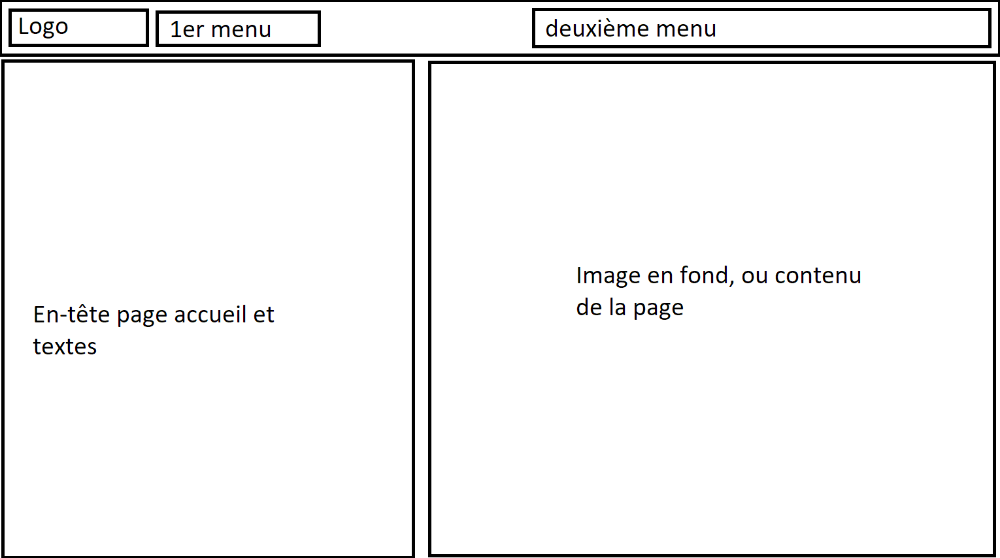

Stage de deuxième année
Portfolio de stage
Bienvenue dans ma page portfolio par rapport à mon stage de deuxième année pour une association.
Vous retrouverez ici les différentes étapes de la réalisation du site Internet.
Maquettes:
Voici les maquettes réalisées afin de pouvoir visualiser le rendu que devrait avoir la mise en page du site web.
Maquette client
Cette maquette représente un layout classique avec une navbar, un header et des cards pour les différents éléments.

Maquette administrateur
La navbar sera fixée à gauche, puis le contenu principal sera à la droite de l'écran.
Développement:
Voici les différentes pages du développement du site internet
L'accueil

La page actualités
La page édition d'articles
La page édition de cartes
Bilan de mon stage de deuxième année
Introduction
Je me nomme PARMENTELOT Maxime et je suis actuellement en 2ième année de BTS SIO au sein du lycée de Merleau Ponty à Rochefort, j’ai été pris en stage au sein d'une association 'Bus AnOrient' pour une durée de six semaines.
Remerciements
Je tiens à remercier le gérant de l'association pour son intérêt envers le projet
Mes objectifs lors de ce stage
Approfondir mes connaissances dans le développement de site web dynamiques, en utilisant de nouveaux langages de programmation et de nouvelles méthodes.
L'association
L'association consiste à sauvegarder du patrimoine du réseau d'autobus de la ville de Lorient, afin de les restaurer et de leur éviter une mise à la casse (bien souvent), ou alors l'exportation des bus dans des pays non concernés par les normes européennes. Les adhérents peuvent, en fonction des périodes et des financements, accéder à de sortes de journées portes ouvertes, visiter les véhicules, assister à des étapes de restauration, puis de temps à autre si les conditions le permettent, réserver des tours de roues d'un des véhicules sauvegardés.
Les Missions que j'ai dû réaliser
Lors de ce stage, j'ai du concevoir un site web dynamique et modulable pour une association afin qu'ils puissent communiquer, sur tout type d'appareils
Semaines
Première semaine
Après avoir pris connaissance de l’entièreté de l'équipe, et de leur quotidien, il m'a fallu prendre aussi connaissance des besoins de leur association et de leurs attentes par rapport au projet "site internet". L'équipe m'a alors dressé un cahier des charges minimal à respecter, me laissant et confiant un minimum de flexibilité pour le projet. Les maquettes type IHM sont alors en cours de conception, pour qu'on décide ensemble de ce qu'il sera mis en développement réel..
Deuxième semaine
Les maquettes IHM sont désormais majoritairement terminées, pour la partie utilisateur, qui défini une majorité des besoins du panel d'administration. La page d'accueil a été terminée, elle définira la majorité des codes du site internet. J'ai eu l'accord d'un des responsables pour utiliser essentiellement du php, assisté par le framework Laravel pour la conception du site.
La page d'accueil, intégrant un slider en plein écran, avec d'autres cartes s'affichant en scrollant vers le bas, synthétisant les pages principales en invitant à en savoir plus à été crée.
Troisième semaine
Durant cette semaine, les pages ont majoritairement toutes eu leur architecture terminée, avec des informations gérées dynamiquement par l'intermédiaire d'une base de donnée, laissant à l'équipe l'accessibilité aux données renseignées. Après concertation, quant à l'éditeur de texte embarqué, il sera utilisé une solution gratuite nommée "TinyMCE", cette dernière permettra de réaliser du traitement de texte efficace, avec l'intégration dynamique d'images et vidéos.
Quatrième semaine
Pour cette semaine, le côté utilisateur est quasiment terminé. Le côté administrateur, lui, avance, et permettra de gérer les adhérents, ajouter/supprimer/modifier des articles, gérer les rôles (éditeur/adhérant/administrateur), gérer la page d'accueil (slider et cartes), puis les différentes autres pages (contact, adhésion, véhicules...).
Cinquième semaine
Pour cette semaine, le côté utilisateur et administrateur est dans la globalité terminé. L'ensemble du site et son contenu dispose d'une flexibilité simple et efficace pour n'importe qui. Il resterai, si l'équipe est toujours partante, pour quelques fonctionnalités annexes. La documentation utilisateur et administrateur, rédacteur ect. est en cours, avec une étude de prix/besoins nécessaires pour un hébergement sous peu, avec accompagnement de la création des comptes, premiers pas avec l'interface... L'une des dernières tâches à réaliser, en dehors du côté documentation et accompagnement, concerne l'aspect "responsive", consistant à rendre compatible l'interface du site web en fonction de la taille d'écran.
Sixième semaine
Lors de cette dernière semaine de stage, le côté utilisateur et administrateur a été finalisé. Les textes et images définitives ont été mises en place, la documentation utilisateur (webmaster) a été finalisée, ainsi que la création des comptes des différents intervenants de l'association. Egalement, l'aspect responsive à été terminé, pour l'interface utilisateur et administrateur. Je reste néanmoins disponible pour de légères évolutions et de l'assistance pour l'association, étant souvent en contact avec eux en dehors de ce contexte.
Bilan
Au cours de ces six semaines de stage, j'ai pu approfondir mes connaissances du framework Laravel, et des vues Blade tout en intégrant de nouveaux outils tels que tinymce, des hébergeurs d'image locaux, ... Ce stage m'aura permis de mieux maitriser le PHP afin de créer des applications toujours plus légères et complètes.